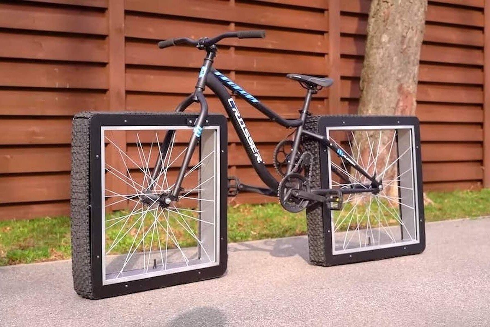
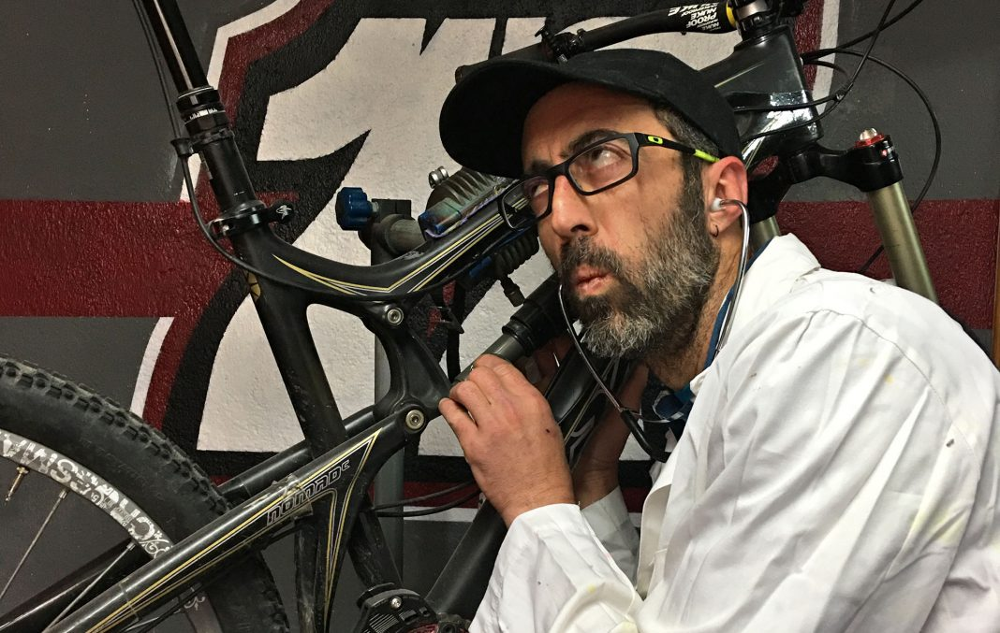
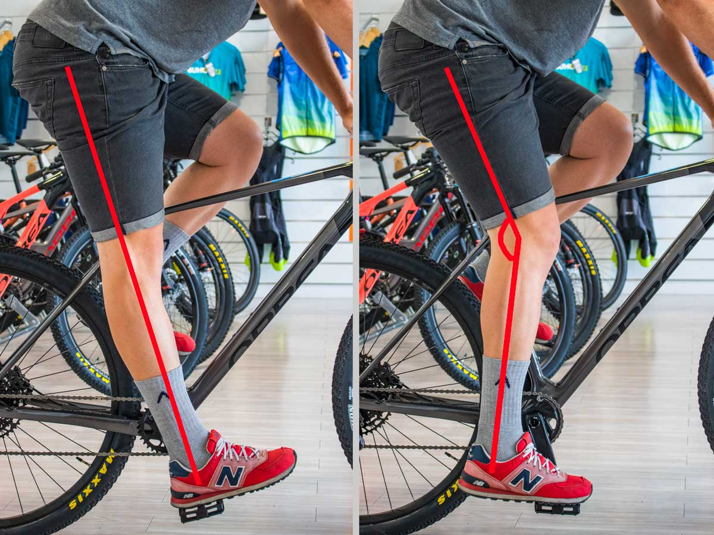
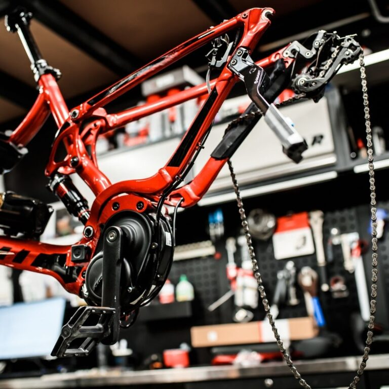

Introducción
Bienvenido al Manual de Revisión de Bicicletas. En este manual, aprenderás a realizar un mantenimiento completo de tu bicicleta para garantizar un funcionamiento seguro y eficiente. ¡Comencemos!
Revisión Básica
La revisión básica de tu bicicleta es esencial para mantenerla en buen estado. A continuación, te mostramos los pasos para realizar una revisión básica.
Ajustes
Realizar ajustes adecuados en tu bicicleta es fundamental para garantizar un viaje cómodo y seguro. Aprende cómo realizar los ajustes necesarios.
Mantenimiento Rápido
El mantenimiento rápido de tu bicicleta es esencial para garantizar un funcionamiento suave y seguro. A continuación, se describen algunas tareas de mantenimiento rápido que puedes realizar:
- Lubrica la cadena.
- Verifica la presión de las ruedas y ajústala si es necesario.
- Asegúrate de que los frenos funcionen correctamente.
- Inspecciona y ajusta el asiento y el manillar.
- Limpia y engrasa las partes móviles.
Mantenimiento Completo
El mantenimiento completo de tu bicicleta es esencial para su longevidad y rendimiento óptimo. Aquí están los pasos para realizar un mantenimiento completo.
Enlaces Útiles
Aquí tienes algunos enlaces útiles relacionados con la revisión y el mantenimiento de bicicletas: